Cerimônia
Sábado, 19 de junho de 2027, às 15h
Igreja Matriz Nossa Senhora de Nazaré
Rua Sete de Setembro, Cachoeira do Campo
O convite
Escolhemos a Matriz de Nossa Senhora de Nazaré, em Cachoeira do Campo, erguida no começo do século XVIII e uma das igrejas mais antigas de Minas. É ali, diante de Deus, que queremos você ao nosso lado no dia mais importante das nossas vidas.
Será uma alegria celebrar com você.
Informações
Sábado, 19 de junho de 2027, às 15h
Igreja Matriz Nossa Senhora de Nazaré
Rua Sete de Setembro, Cachoeira do Campo
Passeio completo
Junho em Minas tem noites frias. Traga um agasalho elegante.
Vila Galé
Logo depois do sim, a festa continua a poucos minutos da igreja.
A festa
Do altar para a festa são poucos minutos. A Vila Galé ocupa o antigo quartel da cavalaria de Minas, um casarão tombado do século XVIII, e é lá, entre jardins e montanhas, que a noite vai ser de brindes, abraços e pista cheia.
Ver no mapaAntes de vir
Nossa história
Somos dois apaixonados por treino, estrada e sofá. Esta é a nossa história, contada em quatro capítulos, até chegar ao altar.
A largada
A nossa história começou de tênis amarrado e touca de natação. Dois triatletas com a mesma rotina: despertador antes do sol, braçadas na água fria, quilômetros de bicicleta e a corrida para fechar o dia. Entre uma prova e outra, a companhia de treino virou a melhor parte do treino. E, sem a gente perceber, virou companhia para a vida.
Numa prova longa, ninguém chega sozinho. Um puxa quando o outro cansa, e os dois cruzam a chegada juntos.
A estrada
Do esporte veio a coragem de ir mais longe. Descobrimos juntos o prazer de colocar o pé na estrada, sem pressa de chegar. Cada viagem trouxe uma paisagem nova, uma história para contar na volta e a mesma certeza de sempre: o melhor lugar do mundo é aquele em que estamos lado a lado.
A casa
E toda estrada leva de volta para casa. Por mais ativos que a gente seja, no fundo somos caseiros: um filme escolhido a dois, uma série sem hora para acabar, o sofá e o tempo correndo devagar. É ali, no nosso canto, que a gente recupera o fôlego para a próxima largada.
O chamado
Somos católicos, e para nós o casamento é, antes de tudo, um sacramento. Quando começamos a sonhar com o nosso sim, Ouro Preto não foi uma escolha, foi um chamado. Entre igrejas barrocas, sinos e ladeiras de pedra, encontramos o lugar certo para começar a prova mais longa das nossas vidas. E a mais bonita.
Em três palavras
O sofá, um bom filme e o tempo sem pressa.
A escolha de casar diante de Deus.
Treinar, viajar e cruzar a chegada juntos.
É melhor serem dois do que um. Se um cair, o outro o levantará.
Eclesiastes 4,9-10
Para quem estará no altar com a gente
Nas nossas provas longas de triathlon, aprendemos que ninguém chega sozinho. A gente sempre olha para o lado e encontra alguém puxando o ritmo, dividindo o cansaço e comemorando cada chegada.
Fora das provas, foram vocês que fizeram isso por nós: nos treinos, nas viagens e nos dias comuns. Agora vem a prova mais importante das nossas vidas, e queremos vocês ao nosso lado desde a largada.
Madrinhas
Em cores vibrantes, estampas e tecidos variados. Jacquard, seda, cetim e outros tecidos elegantes são bem-vindos. Escolha o modelo que mais combina com você.
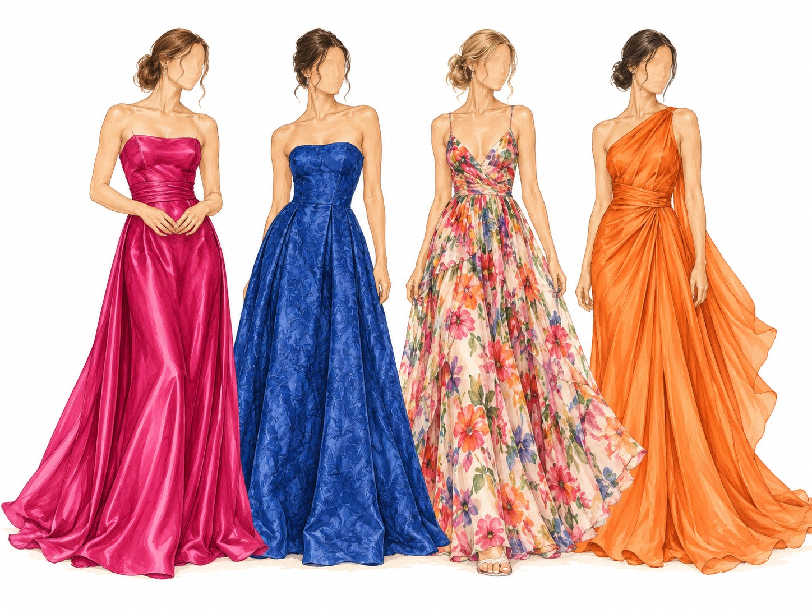
Padrinhos
Camisa branca e sapato social preto. A gravata, preparamos especialmente para você.
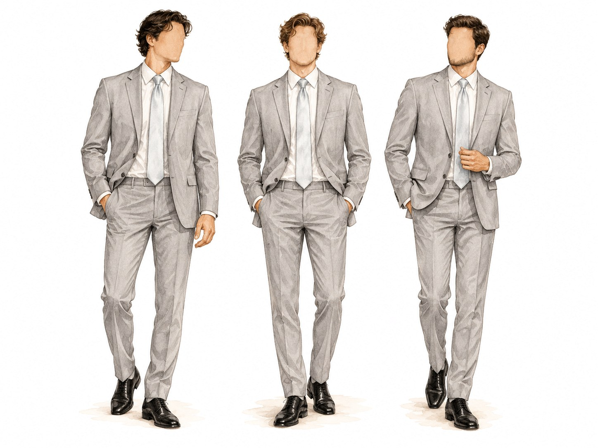
Chegue 30 minutos antes. A cerimônia começa às 15h, e a noiva promete chegar no horário.
Durante a celebração, viva esse momento com a gente.
Seguimos juntos para celebrar na recepção.
19 · 06 · 2027
Sábado, às 15h · Ouro Preto, Minas Gerais
Todo príncipe tem uma missão importante em um conto de fadas. No nosso, essa missão é sua.
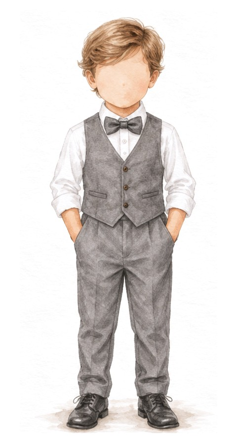
Sua missão
Entrar na igreja antes da noiva, levando a plaquinha que avisa a todos que ela está chegando.
Lá vem a noiva!
Para o grande dia
Camisa branca, colete e calça cinza claro, gravata borboleta cinza e sapato social preto.
Queremos o seu sorriso para alegrar a nossa cerimônia.
Toda princesa tem um lugar especial em um conto de fadas. No nosso, esse lugar é seu.
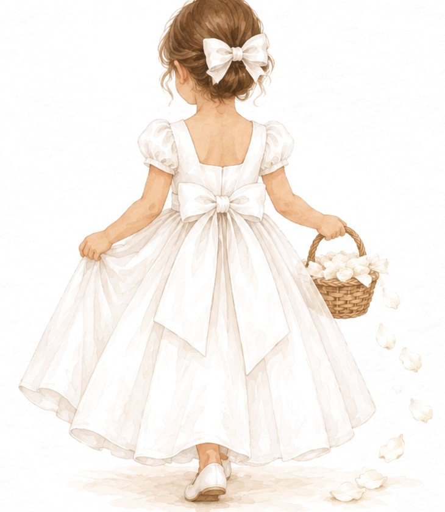
Sua missão
Entrar na igreja antes da noiva, espalhando pétalas pelo caminho por onde ela vai passar.
Para o grande dia
Vestido branco.
Queremos o seu sorriso para alegrar a nossa cerimônia.
Venha pelo casamento, fique por Minas
Amamos viajar. Por isso, queremos que a sua vinda para o nosso casamento seja também uma viagem inesquecível pelas Minas Gerais.
Como chegar
Quem vem de avião desembarca em Confins. De lá, é pegar a estrada rumo à serra: em cerca de uma hora e meia, o asfalto dá lugar às curvas de Minas e às torres da igreja.
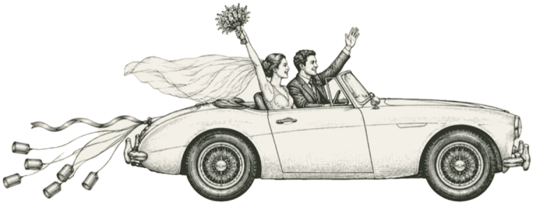
Chegada
Belo Horizonte
Cerimônia · 15h
Igreja Matriz e recepção
Para passear
Centro histórico
Bate e volta
A primeira cidade de Minas
Vai se hospedar no centro histórico? Combine com antecedência o transporte até Cachoeira do Campo, porque as ladeiras e a volta à noite pedem planejamento.
Inverno na serra
Médias aproximadas de junho: dias secos e de sol, noites frias.
Para os passeios e para a noite do casamento.
As ruas são de pedra e cheias de ladeiras. Salto fino, só para a festa.
Cada esquina de Ouro Preto pede um registro.
Hospedagem
Para dormir ao lado da festa ou acordar no centro histórico, separamos as nossas opções favoritas.
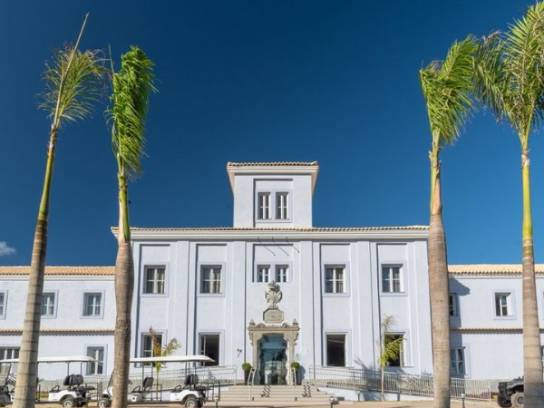
Cachoeira do Campo
No mesmo distrito da igreja e da festa. A escolha mais prática para quem quer dormir pertinho de tudo.
Ver no mapa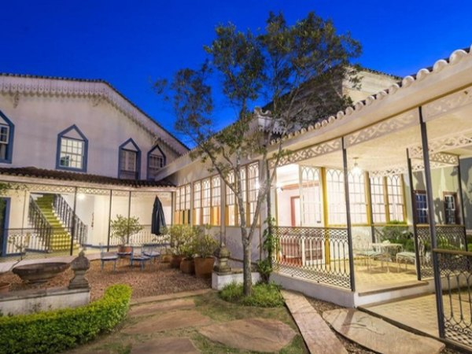
Centro histórico
Um casarão clássico no coração da cidade, a poucos passos das igrejas barrocas.
Ver no mapa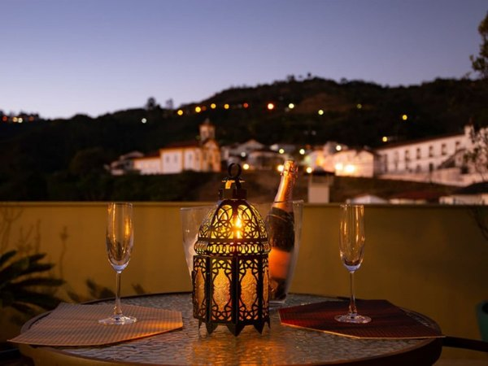
Praça Tiradentes
Na Rua Conde de Bobadela, a rua mais charmosa do centro, colada à praça.
Ver no mapa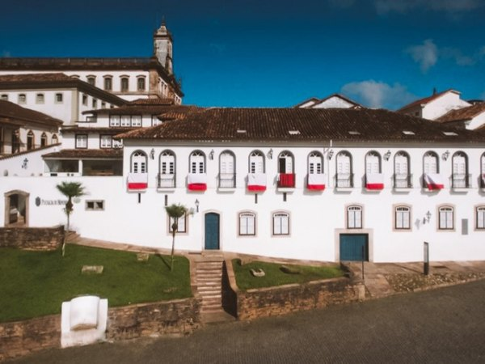
Largo de Coimbra
Um casarão colonial ao lado da Igreja de São Francisco de Assis, com sacadas abertas para os telhados da cidade.
Ver no mapa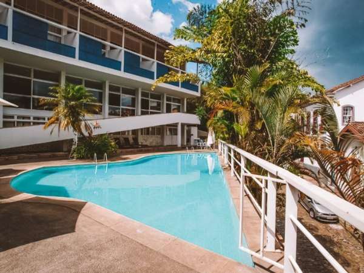
Centro histórico
Projeto de Oscar Niemeyer, com vista para a cidade e perto da Igreja de São Francisco de Assis.
Ver no mapa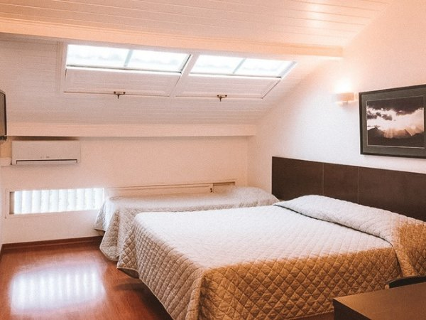
Mais econômico
Quartos confortáveis e café da manhã incluído, a uma caminhada curta do centro histórico.
Ver no mapaFotos: Diário do Comércio, The Hotel Guru, Mala de Aventuras, Melhores Destinos, Dicas de Viagem e Eating the World.
Restaurantes
Em Minas, a gente se conhece à mesa. Anote os endereços que, para nós, já valem a viagem.
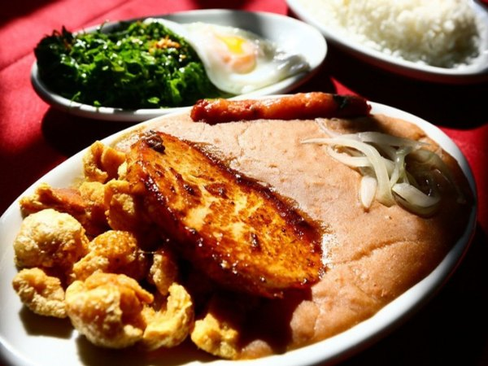
Comida mineira
Fogão a lenha, panelas de pedra e o buffet mineiro de verdade, na Rua Camilo de Brito.
Ver no mapa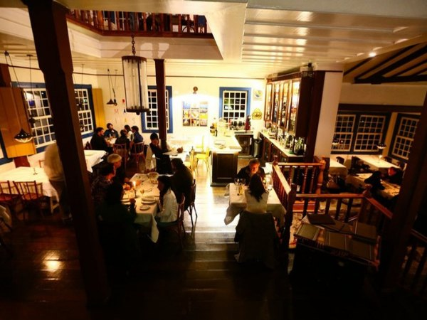
Comida mineira
Cozinha mineira com uma das vistas mais bonitas da cidade: a Igreja de São Francisco de Assis.
Ver no mapa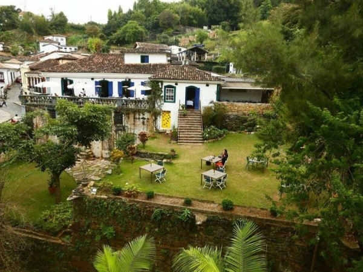
Massas e risotos
Pizzas e risotos num casarão da Rua São José, para uma noite sem pressa.
Ver no mapa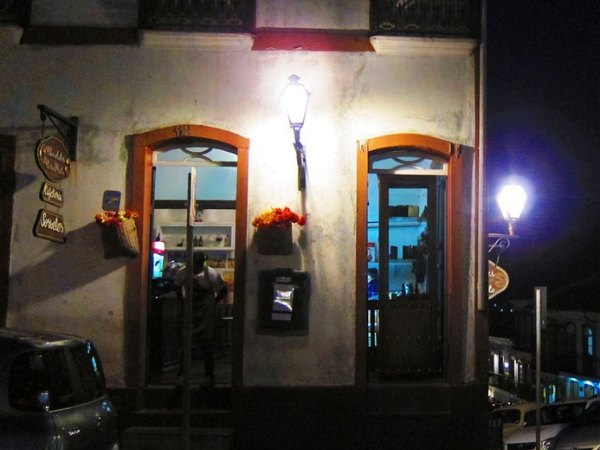
Para a noite fria
O chocolate quente mais famoso da cidade, na Praça Tiradentes. Perfeito depois de um passeio.
Ver no mapa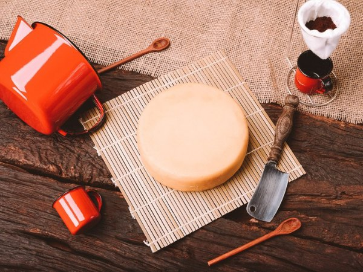
Para provar
Queijo canastra, pão de queijo, broa de fubá e doce de leite. Leve um pouco de Minas na mala.
Fotos: Diário do Comércio, The Hotel Guru, Mala de Aventuras, Melhores Destinos, Dicas de Viagem e Eating the World.
Passeios
Reserve um dia antes ou depois do casamento. Ouro Preto se descobre a pé, entre igrejas, museus e ladeiras de pedra.
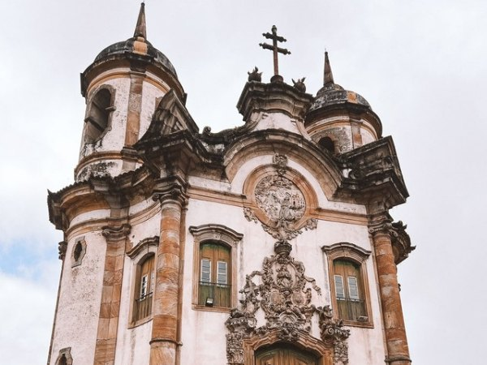
Imperdível
A obra-prima de Aleijadinho, com o teto pintado por Mestre Ataíde. O barroco mineiro no seu auge.
Ver no mapa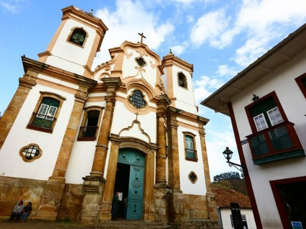
Barroco
Uma das igrejas mais ricas em ouro do Brasil. Entre, olhe para cima e se prepare para o brilho.
Ver no mapa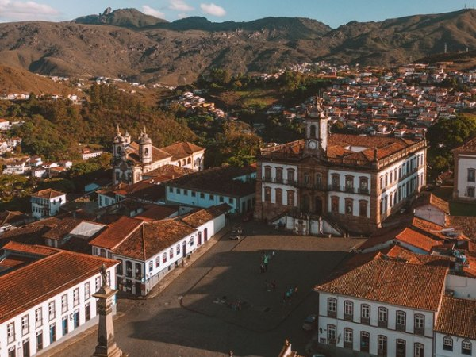
Centro
O coração da cidade, com o Museu da Inconfidência e o melhor pôr do sol entre os casarões.
Ver no mapa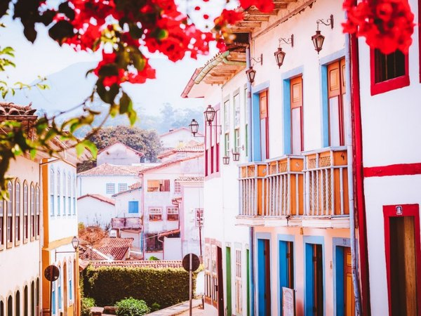
A pé
Caminhar sem pressa entre casarões, ateliês de pedra-sabão e antiquários. Use sapato confortável.
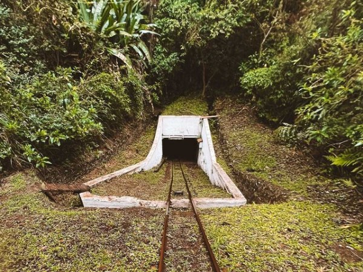
Aventura
Uma descida de vagonete até uma antiga mina de ouro, entre Ouro Preto e Mariana.
Ver no mapa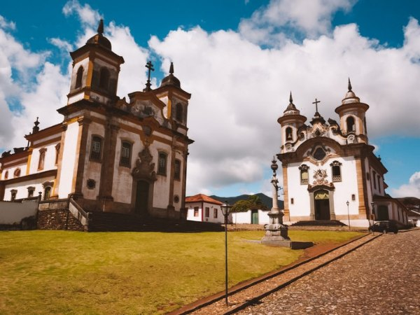
Bate e volta
A primeira cidade de Minas, a uns 15 minutos. Vale meio dia de passeio entre praças e igrejas.
Ver no mapaFotos: Diário do Comércio, The Hotel Guru, Mala de Aventuras, Melhores Destinos, Dicas de Viagem e Eating the World.
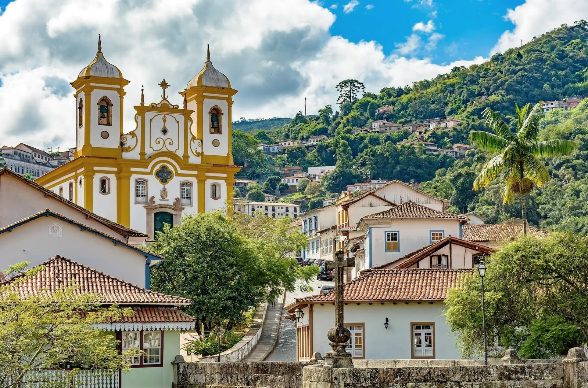
Por que Ouro Preto
Antes de ser Patrimônio da Humanidade, Ouro Preto foi Vila Rica, a cidade do ouro, das igrejas barrocas e da Inconfidência. Cachoeira do Campo, o distrito onde vamos casar, é ainda mais antiga: nasceu quando os primeiros mineradores, castigados pela fome, encontraram ali terra fértil para plantar.
Nasce o arraial de Cachoeira do Campo, celeiro das minas de ouro.
Na Matriz de Nazaré, ainda em obras, o povo aclama o primeiro governador das Gerais.
O arraial do ouro preto vira Vila Rica.
Filipe dos Santos é preso no adro da Matriz. A revolta que ele liderou é lembrada como o nascimento de Minas.
A Inconfidência Mineira sonha com a liberdade a partir de Vila Rica.
Ouro Preto é a primeira cidade brasileira declarada Patrimônio Mundial pela Unesco.
No dia 19 de junho, na mesma Matriz, a nossa história ganha o seu capítulo mais bonito.
Responda até 19 de março de 2027
Sua resposta nos ajuda a preparar cada detalhe com carinho, do lugar à mesa ao último brinde.
Presentes
A sua presença é o nosso maior presente. Para quem quiser nos presentear, a lista vai estar aqui.